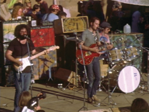

I can almost remember back to when I was fifteen or sixteen, when the world in all its gentle anger seemed to bloom in front of me for the first time, or maybe it didn’t bloom, but it laid itself flat, at least, for me to vandalize. I can almost remember it. Because I can’t, really. It’s a spattering of memories all painting a general outline. Each one is a discrete element, but I can’t look at any one of them individually. I just have the outline. Fear, and dreadful longing, and shining anger, and this brilliant incandescent joy.
I’ve been going back to Milwaukee for Thanksgiving for a few years now but this year was the first time I really had any free time during the trip. Most of the time I drive up Tuesday and drive down Saturday. That’s a palindromic itinerary: a day of travel; a day of helping out around the house; a day of, I don’t know, Giving Thanks, I guess; a day of helping out; a day of travel. I don’t know what happened this year, but I stayed for a whole extra week. Didn’t wanna go back. Called in sick and everything.
I spent quite a lot of it listening to the Grateful Dead. My mom’s old tapes are mostly early ‘80s stuff, and that’s always been my favorite era of theirs, but there’s something to be said for the oft-revered Early Seventies, especially those extended instrumental jams in the back half of each show. And my favorite jam vehicle of theirs by far is Dark Star, which from ‘69 to maybe mid-’73 was their flagship song.
I’ve decided I want to write about a few select Dark Stars I really like, partly as a listening exercise, but also because a really good Dead improvisatory piece has so much life to it. So much richness! You can get really properly lost here. I embedded the audio further down in the page so you can listen along, and I’d recommend you do. It’s a lot of fun, and I hope my notes can help you get your bearings. Or if you’re already pretty familiar with this one, I hope you can find something you haven’t noticed before.
This first Dark Star I’ve chosen is a famous one, and it’s one of my favorites. You know the story. Hottest day in Oregon history. Folks complain about the guitars being out of tune but I don’t think it’s a big deal. Sun sets on a dusty fairground.

For the uninitiated, the musicians are as follows:
See also: What is Dark Star?
A large portion of this show was filmed and you can find it on Youtube, if you're interested. (It's where I got the audio file from.) Personally, I think it ruins the magic a little.
Pretty typical intro. Jerry and Phil poking around.
0:22: Immediately at the start, Jerry’s melody: four eighth notes, starting on an offbeat so as to emphasize the second and fourth ones. He’ll use this rhythm again.
Throughout this early section Phil is insisting on A as a root.
1:15: Interesting chord from Bobby. Doesn’t so much resolve as get released.
1:21 Phil plays a little minor pentatonic around E. He hangs on it for two beats, then brings it back to A as if the E were a fifth.
1:31: Some really neat distortion on Phil’s bass as he runs up to the sixth and backs off.
1:34: Jerry sounds like he’s setting up a resolution to a D on a D major chord here (which would be like a I-bVII-IV thing). He isn’t, of course. Maybe part of this effect is Phil playing a F#.
1:43: From Weir a single note and then thirds emphasizing Em.
2:02: I like the piano chord here. Keith and Bobby decide on E minor momentarily for the next ten seconds or so.
2:22: Bobby does the same 7 to 1 emphasis of minor as at 1:43 but this time it’s an A to B emphasizing the new Bm.
2:30: Main theme has sort of broken down into a B natural minor – that’s all the same notes as the song’s normal key, but with a different focus. A quieter place by 3:00 as Jerry has backed off. Weir plays a bit more melodically to make up for it. Drums are staying on top of things.
(The whole band is gorgeous here these thirty seconds.)
2:47: Lesh plays a pretty clear A to try to destabilize the Bm and it sort of works – it’s sparse enough here that I’m not sure it’s helpful to try to assign a chord symbol.
3:14: An interesting chord, some sort of C major. Sounds like Phil’s doing. Not friendly with Jerry’s Dorian, and he stays away from it until it resolves back to E minor, and at 3:22 Phil is back on A.
3:28: Keith works his way down what sounds like a diminished scale, (although it might be entirely chromatic, I can’t quite tell,) which Jerry and Bobby acknowledge, the former gently transitioning from his comfortable minor pentatonic to accommodate Godchaux’s chromaticism, and the latter adding a dissonant stab or two before it resolves back to E. This is a really remarkable bit of musical telepathy if you ask me.
3:45: Jerry starts his spacy bends. The lightness of these notes contrasts sharply with Bobby, who sounds like a barn owl on a high E minor (although at around 3:52 he softens, and indeed in the corner of the video you can see him adjusting his tone knob).
4:18: Two passing flat notes in the bass.
5:15: Jerry’s A-G-F#-E riff here is one I swear I’ve heard in other Dark Stars too. Some harmonics from Bob.
5:56: Jerry repeats a certain melody four times, with a certain little hammeron from Bob each time. Then he does it again, but he varies it and keeps the melody going. Nice on-the-fly melodic development.
6:26: Tom rolls from Billy like ducking your head under a doorway. Energy builds with Jerry’s triplets; more snares. Phil keeps things rooted.
6:30: A flub from Bobby. “Interesting chromaticism!” To his credit he recovers it really gracefully.
6:36: Phil plays only As for a whole measure and a half.
7:20: Lesh plays Dies Irae on E, (which is how you know he went to music school,) and then a little E riff that includes a C. This shifts the balance a little darker to the E minor side.
7:25: It’s sorta quiet, and subtle because it’s in a low register, but Jerry is playing something similar to the 0:22 four note rhythm, but with a fifth little bounce at the end. Neat.
7:36: Emphatic Gs from Jerry over an A chord, punctuated by simultaneous snare hits. (How did Kreutzmann know to do that?!)
7:41: Garcia plays distorted minor seconds. Keith plays C#-D-E in octaves to emphasize A major. Here we’re at a point where a slight dynamic cooldown puts them in a good spot to go back to the main chord vamp, and that’s what happens here.
7:56 Phil lands on A.
8:01: I quite like Kreutzmann’s four galloping snares here.
8:07: Bobby introduces main chords. Jerry tunes his D string real quick, and none of the others take over melodically so the music has a chance to settle into the main theme.
8:15: Here’s the main theme again. Jerry is center-stage, but Phil is back to his typical bouncy self. Weir plays the chords as he usually does, for two or three measures at least. Jerry’s melodies are quiet, floaty, abstract here; arythmic scale runs especially around 8:38.
8:18: Phil hanging on a C# is a strong This-Is-A-Major-Not-E-Minor. (In A major, C# is a very stable note; not so in E minor.)
8:41: Another prominent chromaticism from Garcia! This one A# to B. Both this and the one around 1:50 are in the context of what is more or less the main theme. This one has this funhouse quality to my ear. It’s followed by some chromatic scale runs (that Bobby somehow picks up on, again, the telepathy!)
8:51 Woah, everybody lands on an Em, and Lesh is by no means unambiguous here. Love his melody at 8:53.
(Thus follows a pretty strong Em section on Phil’s part.)
9:15 Chromatic walkup in the bass from B to D, followed by this little bebop phrase to land on A. Love it.
9:25: Marching pattern on the snare briefly considered then abandoned.
9:27: Phil takes the lead – up to a C B 4-3 thing (in G!) -> some chromatic approach notes.
9:30: Slowing down. Jerry and Keith are trading arpeggios; Jerry is swinging his, while Keith isn’t, which is a strange effect.
Jerry’s playing 9:30-10:30 is a little unfocused. I think he’s trying to figure out what he wants to do next.
9:43: Bass B A G A B tonicizing G like he did at 9:27.
9:48: Phil now lands on A, on Jerry’s suggestion I think.
9:51: Weir softly plays a little chord change that some might recognize as the Mind Left Body jam. (Named for its resemblance to a Jefferson Airplane song, I think?) The chords are A7, Adim7, Dm, A, although the Dm is pretty understated.
9:59: Phil introduces the main theme but by no means definitively.
10:09: Jerry plays two As, as Phil lands with a flourish on an A (after implying that chord with C# and E).
10:40: Jerry arpeggiating with triplets. (He has landed on something.) Bobby joins him. Something similar from Bobby at 6:50 served a very similar function, to get a quick dynamic build.
11:11: The triplets and dynamic build come to a stop on a brilliant and weird little chord (some F#m but I swear I hear Bobby playing a G in there too) and the band (prompted by Billy perhaps) decide simulatenously on the verse.
11:20: Now we’re properly in the main theme. It feels a little stilted to me when it begins because Garcia so clearly wants to play his melodies swung but Kreutzmann’s eighth notes on the ride are almost completely straight-time. By the time Jerry’s voice comes in at 11:39, though, it’s shifted to a pretty heavy swing.
12:55: Verse is done. Swelling; a wide open empty space. Jagged stabs from Bob. The bass distortion does a lot here atmospherically, and this will be the case from here on.
13:36: Garcia takes back over melodic duty with a slide. Reminds me of David Gilmour on Echoes a little bit.
Bobby’s sharp high chords are a wonderful textural contrast to the slide. But he goes back and forth between those sharp high chords and little softer repetitive chord melodies lower down.
13:55: Jerry slides around and the rest of the band picks up a little bit, mainly guided by Phil. The bass playing here is bouncy, playful and centered on E.
This is an interesting Bob Weir area. 14:05 and 14:12 C#-D alternations maintain the specifically Dorian tonality against Jerry’s E minor pentatonic melodies.
14:29 I like Phil’s dotted quarter B to A riff here.
14:30: Jerry abandons the slide and starts picking normally again. Funky section ensues: sixteenth note rapid picking for the first time in fifteen minutes.
14:50: Jerry is picking up himself, as everyone else stays steady; Phil has backed off a bit. Bob is still throwing out his shards of broken glass into the cosmos.
15:35: Jerry plays the same note (G) as Phil and Keith paint a fairly dissonant chord behind him. Garcia acknowledges this melodically.
16:00: Spurred by 15:35, atonality rears its ugly, beautiful head over Phil’s insistent B; edges are sharpened. Keith doesn’t really know what to do for a while.
16:19: Now Garcia’s melody comes back, playing some diminished scale or something.
16:45: Out of the sort of formless chromatic jam we’ve been sitting in since 15:55 or so, Phil starts driving this insistent high A and F#-G-F#-G. Jerry slips behind him for a while until he takes the lead again at 17:10.
17:00: Jerry Bb -> A resolves into a little bit more normal of a space.
17:15: Their dissonant (but not tonally ambiguous) bluesy jam here is reminiscent of second sets from the band a few years back. Driven in no small part by Kreutzmann’s snare.
17:31: Jerry’s brief A major arpeggio is distinct, and still grounds us in Dorian. A respite.
18:00: Bobby lays out, not to come back until 18:30.
18:19: The dynamics have cooled off slightly in Weir’s relative absence. (He plays one brief quiet figure at 18:17.)
18:25: Jerry’s tone shifts dramatically. I can’t tell for sure, but I suspect he switched from his warmer neck pickup to a sharper bridge pickup, which also coaxes a little more distortion (“breakup” is what you might call it) from his amp.
18:25: Strong high bass C#s are here less a first inversion of A and more a natural sixth tension of E minor.
18:30: Bobby comes back with what I think is a flub. He plays a few more isolated stabs, and then a beautiful and strange pinprick sort of chord at 18:35. This sends the rest of the band a little further into dissonance.
18:50: A breath, and then a diving back, prompted by Garcia.
19:02: Phil introduces the melody from his solo, see 20:20.
19:14: There’s a definite conscious switch here for Jerry from E minor to some more dissonant octatonic thing. Keith mirrors him.
19:21: Bass chords! Hard to tell exactly what notes but it sounds like E-D-E power chords voiced as fourths.
19:22: you can hear Weir fill in a little more as Garcia takes a moment to breathe. He’s not quite on the rhythm – it sort of sounds like he wants to transition into another song here, and curiously Kreutzmann copies his galloping rhythm for a moment, but for the most part nobody bites.
Though Jerry is playing in this section, he’s playing pretty softly, and Lesh and Weir sort of take the lead here. He comes back to the front of the jam again around 19:47.
20:02: Lesh hangs on an E-F and plays several Bbs before landing on A. The bass in this Dark Star has definitely been the most elusively chromatic instrument to annotate; again, this guy went to music school. But you could definitely make the argument we are in A minor now and have been since 17:57, the bass C#s at 18:25 notwithstanding.
20:04: Jerry trails off.
20:09: Keith and Phil bring us into a drum and bass solo.
20:18: Big fan of the pseudo-Not Fade Away tom rolls here.
21:26: Keith comes in with some understated chords and Lesh picks up a simpler, spunkier variation of his first motif, this time around B.
21:57: A brief two-chord vamp from Jerry reintroduces our guitarist friends. Sort of sounds like something Bob would do, but it turns out Weir himself is just playing little muted chunks for rhythmic contrast. Phil continues to play more or less in the same vein he has been for the past minute, in a Bm - A pattern that Jerry will mirror in just a second.
22:22: Jerry starts playing melodies again. A quick minor scale run up and down several times before he lands on an A at 22:29. Lesh plays a whole bunch of As.
22:44: Weir comes back in playing an A major, the first chord of the song and yet another reestablishment of that Dark Star E-Dorian. Following Lesh’s lead probably. This is a neat choice given how far the jam has come – it won’t stay here though.
22:50: There is a manic, feverish quality to the jam for a moment here, mainly thanks to Godchaux and Weir. It abates by 23:00.
23:09: Quick 3-1-7 runs around Bm on the lower strings from Jerry. I especially like the way that Lesh at 23:11 picks up on Garcia’s insistent sixteenth notes and hangs on a high F# (a fifth, relative to the Bm) for a dotted quarter. (And at this point in the jam, everyone has been playing such quick rhythms that a dotted quarter note really does seem to hang in the air for a moment. It’s a neat touch.)
23:12: Bobby mirrors Jerry’s rhythm.
23:15: Bobby is emphasizing the same minor pentatonic tonality as Garcia, at least until 23:17 when he shifts down a half step and plays chromatics instead. Jerry agrees and walks up to a high bent note, and this really does seem to be the tipping point for this jam which for the past ten minutes has flirted with atonality without really quite committing to it. The piano quickly descends into chaos. Kreutzmann finally lets loose on the snare. This is a really cool moment.
23:32: Bobby briefly returns to a normal minor chord, but Jerry doesn’t seem happy with that, because as soon as it happens, after a wonderful squealing high note at 23:33 he picks up a series of chromatically descending tritones until 23:43. (Keith is a little noncommittal through this process, although note the chromatic little arhythmic waterfalls at the end of each of his phrases.)
23:43: An absurd and climactic chromatic run from Garcia destroys any tonal sense we had left.
24:08: Dive-bombs from Jerry mirrored on Billy’s snare. Remember how stingy he was with that snare in those first five or ten minutes of the jam?
24:29: Bobby’s squealing abates until about 24:40.
24:36: Chords from Jerry briefly give Phil, who is laying out his own Am pattern, a chance to shine.
24:43: Now Phil breaks out a chromatic walking bass pattern of all things, which I think was a wise choice; it sort of saves the music’s sense of momentum from getting completely buried. Kreutzmann is generous with his kick drum here too, which helps.
24:46: Garcia breaks out his Colorsound Wah-Wah (it’s visible in the video), which will be a defining feature of the stunning next five minutes of music.
Wah pedals were some of the earliest guitar effects invented. All that’s inside is a filter that isolates specific frequencies, and dampens the others. (I think it's called a low-pass?) Moving the foot-pedal changes what frequency is isolated. It’s more or less the same thing a trumpet mute does, actually, just electronic.
25:00: While Jerry is playing his swelling chords with the wah pedal, the rest of the band stays pretty static.
25:10: Now Garcia switches from chords to a similar atonal noodling as before, but the wah gives it an extra muted edge.
25:19: It’s subtle, but the simultaneous quarter-note triplet hits from the bass and snare drum are a little reminiscent of 11:08, I think.
25:24: I love how Jerry slides up to that second high note before his sixteenth notes back down. I think he got this by pressing down on the wah pedal as he slid up, but I’ve never actually played a wah pedal before so I don’t really know how they feel. It’s certainly not an ordinary sliding movement.
25:42: The screeching and jittering backs off for a moment before redoubling. These moments of brief repose are interesting; I wonder if they dynamically emerge from the jam, as everyone just happens to back off at the same time, or if they’re a conscious effort on the part of the band to give the audience some breathing room. In any case, it only lasts a few seconds. Phil steps Eb-C-A down an Adim.
26:03: Another quieting, and this one lasts longer. At 26:09 Phil starts playing an E-G#-C Eaug argpeggio, which could be a harmonic minor V if you want. Then E octaves.
26:23: the band shifts into a beautiful chord I can’t quite figure out, with Jerry playing high twinkling arpeggios and Bobby muted little half-chord triplets.
26:29: A repeated five note phrase from Keith gets distorted as he activates a wah-wah pedal of his own.
26:40 Phil quotes the rhythm from his solo five minutes ago.
26:53: Jerry comes back in as melodic lead; it sounds like it could be a minor pentatonic fill but it quickly dissolves into chromaticism. Phil resolves to A, though it’s sort of a Phrygian one, like at 20:02.
26:59: Big fan of the bass melody here.
27:04: Jerry plays the same melody twice here: first walking up to an A, then the same melody but ending on a G# instead. Perhaps an allusion to the appoggiaturas at 1:50 and 8:41? He does this again, then does something similar but moving it down a whole step with a G and an F#. The rest of the band is a little quieter during this part. Phil alludes to his solo, while staying in A.
27:14: Rootless G7 from Weir on top strings. I think.
27:23: Now we start to pick back up again, but between Weir’s meek hammer-ons and Keith’s wah-wah muting his piano it’s a less bright build than the previous ones.
Shrieks of feedback and lost noises. Everybody sorta falls down the stairs here (in a good way).
29:05: As the wave sort of crashes Jerry picks up an actual chord progression: a minor chord, then two diminished chords, then another minor chord. (Bm, Bdim, A#dim, Am, then a C afterwards?) Godchaux follows. A presumably kind of tired Bill Kreutzmann eases up on the drumset, leaving space rhythmically for the first time in quite a while. Phil plays high notes, and he isn’t pentatonic per se but certainly more tonally intelligible.
29:30: A really cool effect on the bass created by maybe playing a minor second, or bending it, and letting those slightly out-of-phase low pitches sort of ripple against each other.
29:42: A wonderful moment of contrast here: a solid minor third from the bass and a shrill shriek of feedback from the piano.
29:51: Kreutzmann lays out entirely but for some ambient cymbals.
This minute and a half or so is one of the most strange and beautiful moments the band ever put to tape. I’ve listened to this performance all the way through probably close to fifty times now and I still love it to pieces. Lesh’s bass is the most aggressive feature here.
30:06: An iconic three-note call from Weir, repeated with variations. (Sounds like E-E-Bb? And then again a whole step down, sort of echoing what Garcia did at 27:04.) Phil plays Eb-D resolving on D.
30:11: Lesh starts playing really crunchy bass chords, and insisting upon D.
30:21: Jerry seems to lead into some sort of D major with a B-C#-D, and Phil lands once again on a strong distorted D major. Bobby is still in Dm with As and Fs.
30:27: Another iconic memorable moment is Jerry’s D-D-C melody here. He is now in D major, and frequently using an F to imply some sort of borrowed minor harmony. (Kinda like in Morning Dew. Hm.)
31:05: Prompted by Lesh, the band once again swells.
31:21: This is another iconic moment. Jerry, having resolved quite clearly on his end to D, explicitly starts playing Morning Dew. Phil plays not a D but another Bb chord? Presumably he didn’t hear. Bobby blatantly ignores both of them and starts playing El Paso instead.
(I am not going to give the ever-impatient Weir the benefit of the doubt here. The past half hour has been a testament to the telepathic communication these musicians had during improv, and I think he absolutely heard those opening chords, knew exactly what Garcia was doing, and just wasn’t feeling it. In any case Jerry is a good sport about it, immediately playing a little E-D-E-D line to accompany him.)
31:36 Phil slips a b3 down to the root, and the storm has cleared. Kreutzmann takes a moment to reconstruct the rhythmic foundation he released almost two minutes ago.
What follows is an excellent rendition of an old Marty Robbins song, with some great country lead guitar from Garcia. I don’t have much to say about it but you should listen; it’s a wonderful palate cleanser. (I especially like Jerry’s little chromatic thirds on “It’s getting harder to stay in the saddle / I’m getting weary, unable to ride” which do indeed sound a bit like falling off a horse.) There’s a nice bass chord from Phil at the end, as if to allude to the jam that preceded it.